ⓘ
이 서비스는 체력 수준을 참고로 비교해 보는 도구이며 의료기기가 아닙니다. 질병의 진단·치료·예방을 목적으로 하지 않습니다.
입력한 값은 브라우저 안에서만 계산되며 이 기기 밖으로 나가지 않습니다.
이렇게 써 보세요
나이·성별을 넣고, 아는 측정값만 넣습니다(없어도 됩니다)
"또래 중 내 자리 보기"를 누르면 항목별로 100명 중 몇 등인지, 예상 인증 등급, 먼저 기를 항목이 나옵니다
내 위치나 지역을 고르면 그 운동이 되는 가까운 공공체육시설이 지도에 뜹니다
측정값을 몰라요 — 예시로 바로 보기
1
나에 대해 알려 주세요
나이와 성별만 넣어도 됩니다. 측정값은 아는 것만 넣으세요.
4
가까운 공공체육시설
내 위치를 쓰거나 지역을 고르세요. 폐업·삭제된 시설은 뺐고, 위치가 없는 시설은 지도에 없습니다.
운동한 경로·고도·속도와 태운 칼로리는 CaloryX 로 기록 할 수 있어요.
체력 다음 — 식단·체중·운동은 CaloryX로
이 사이트는 지금 내 체력이 또래 중 어디쯤인지 를 보여 줍니다. 그다음 매일의 식단·체중·운동 은 트렌드 엑스가 만든 앱 CaloryX 로 기록하고 관리할 수 있어요.
🍱 식단 음식 사진 한 장으로 칼로리·단백질·탄수화물·지방 분석 한 상 차림도 반찬별로 나눠 계산, 양은 0.1인분 단위로 고침 음식 검색(바코드·프랜차이즈·편의점, 식약처 영양 데이터) AI 영양 코치에게 "뭐 먹지?" 묻기 🚴 운동 산책·러닝·등산·자전거 GPS 기록 3D 지도로 경로 다시 보기, 경로 영상 저장 고도·이동 속도 그래프와 영상 내 사진에 기록을 얹은 인증샷, 태운 칼로리를 음식으로 환산 ⚖️ 체중 먹은 칼로리와 소모 칼로리를 한 화면에서 매일 비교 체중 추세 차트와 나에게 맞춘 하루 목표 주간 AI 리포트·월간 결산, 연속 기록·홈 위젯
실제 사용 화면
스토어 화면
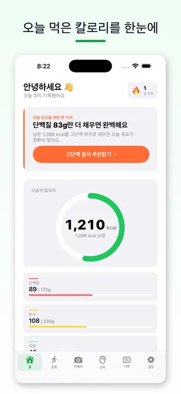
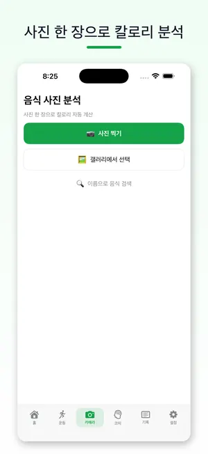
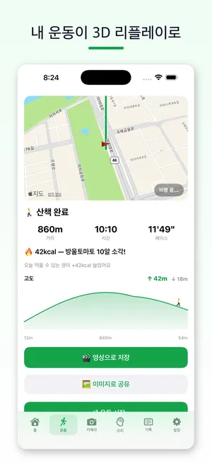
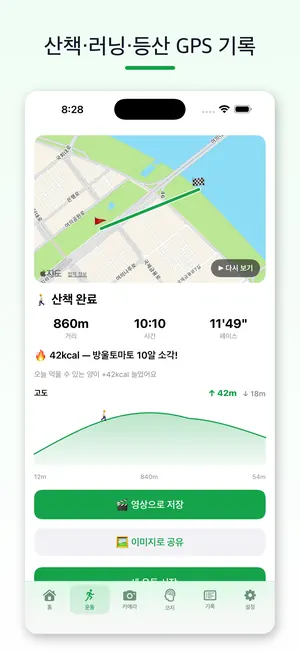
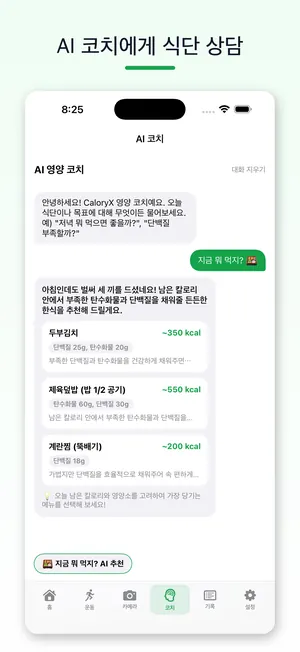
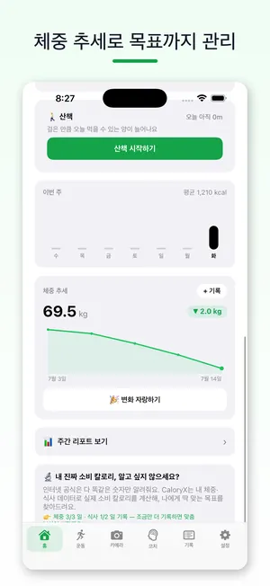
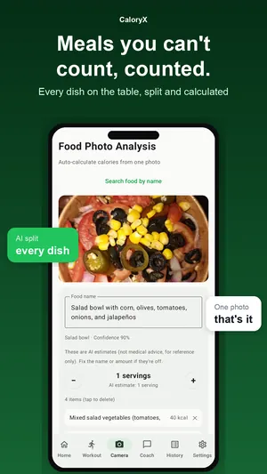
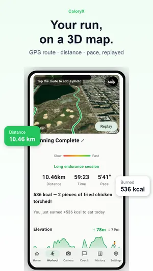
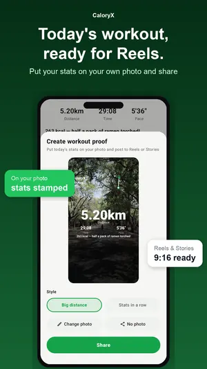
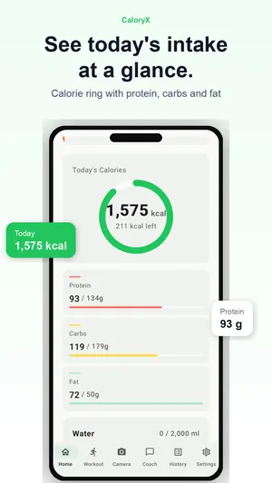
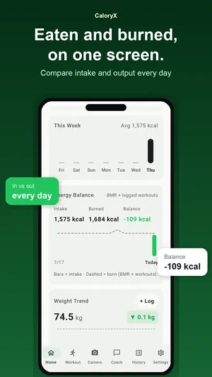
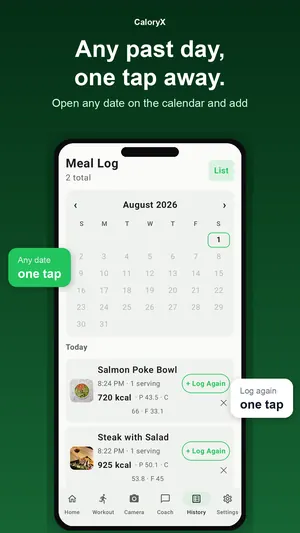
CaloryX 는 로그인 후 사용하며, 설치 후 7일은 모든 기능이 무료입니다. 그 뒤 사진 칼로리 분석·운동 영상·인증샷·주간 리포트·월간 결산은 구독 기능이고(가격은 스토어에 표시), GPS 운동 기록·체중 추세·음식 검색·AI 코치는 계속 무료입니다. CaloryX 의 칼로리·영양 정보는 AI 추정치이며 의료 정보가 아닙니다. 이 사이트에 넣은 값은 CaloryX 로 보내지 않습니다.
데이터: 공공데이터포털 서울올림픽기념국민체육진흥공단 공공데이터(국민체력100 체력인증센터 측정결과 · 공공체육시설 상세 정보 · 국민체력100 동영상 정보). 백분위는 국민체력100 체력인증센터 측정 참가자 표본 기준이며 국민 전체 표본이 아닙니다.
지도: OpenFreeMap © OpenMapTiles · Data from OpenStreetMap · MapLibre GL JS (BSD-3)
2026 국민체육진흥공단 공공데이터 활용 경진대회 출품작 · 운영 트렌드 엑스(TrendX)